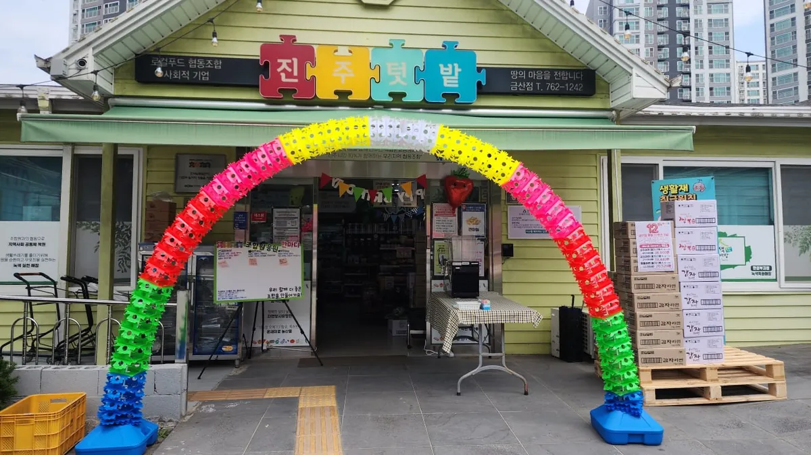
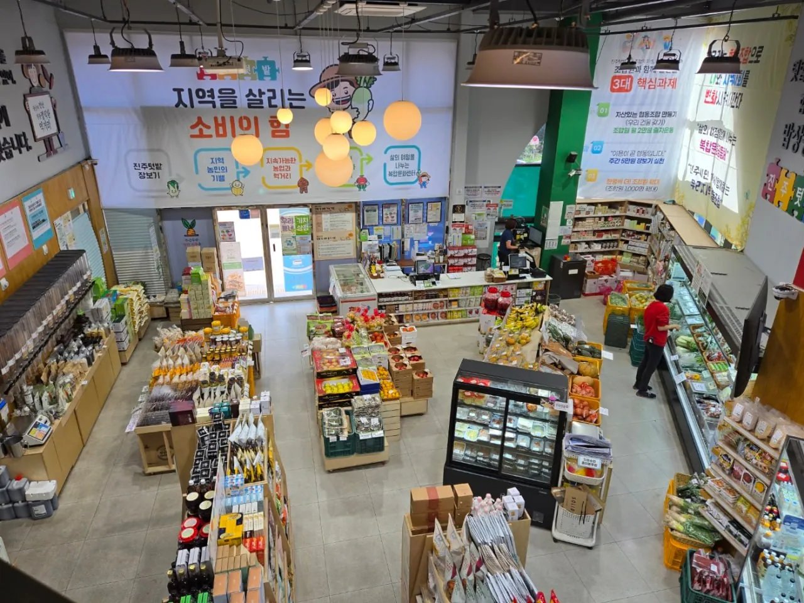
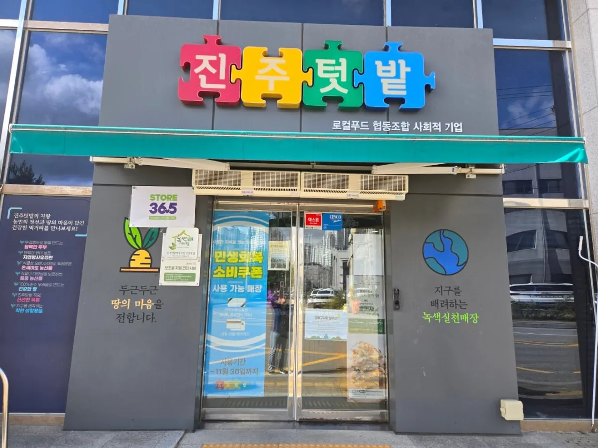
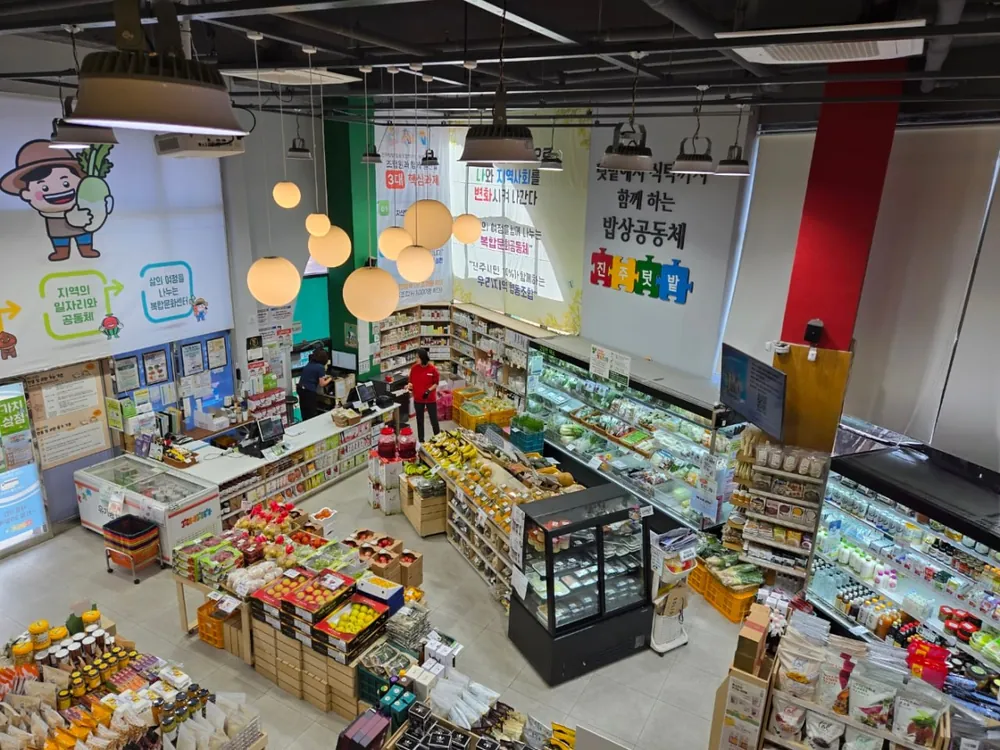
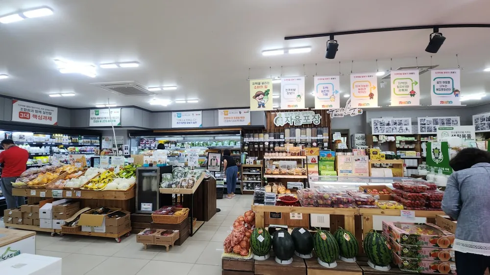
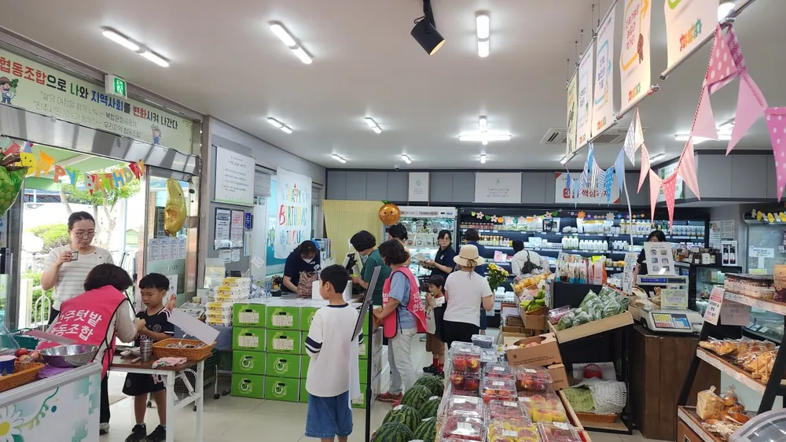
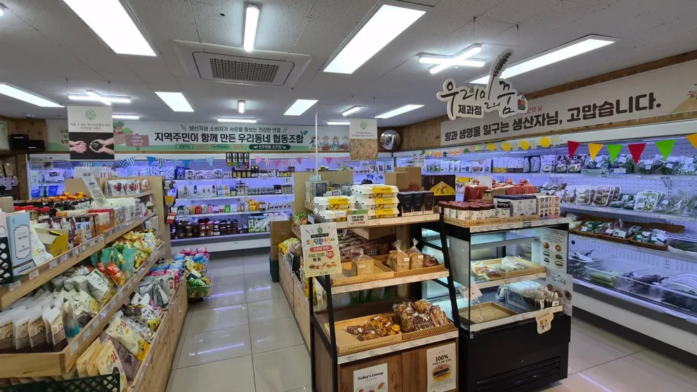
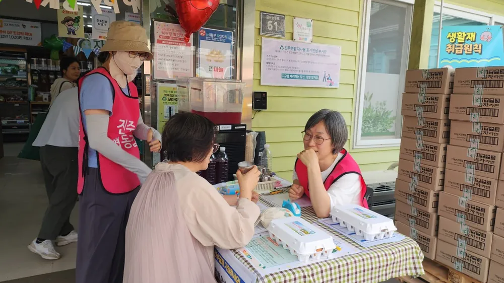
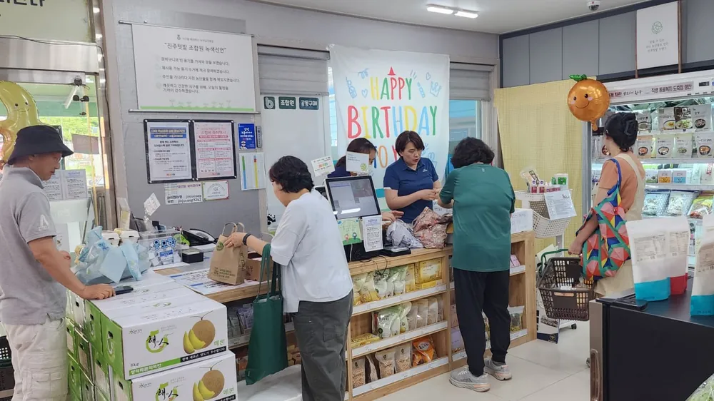
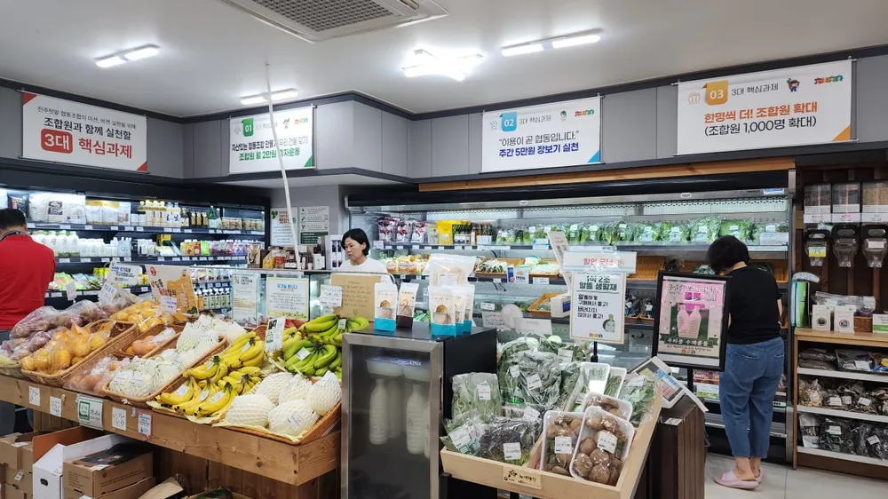

금산점
경남 진주시 금산면 금산순환로 61

건강한 먹거리를 나누고, 지역 농업을 지키고, 이웃과 함께 사는 마을을 만듭니다.
진주우리먹거리협동조합 진주텃밭은 협동조합기본법에 따라 세워진 협동조합입니다. 조합원과 지역 소비자에게 건강한 먹거리를 제공하고, 지역 농업의 발전과 지역먹거리운동의 확산, 건강한 지역공동체 실현을 목적으로 합니다.
또한 취약계층에게 지속적이고 안정적인 일자리를 제공하는 것을 조합의 목적으로 함께 두고 있습니다.
2025년 12월 31일 기준 · 제13차 대의원총회 자료집
아침에 농민이 내놓은 농산물이 그날 진열대에 오릅니다. 가까운 매장으로 오세요.

경남 진주시 금산면 금산순환로 61

경남 진주시 초전북로61번길 9

경남 진주시 평거동 1109-2
출자는 조합에 내는 회비가 아니라 내 몫의 지분입니다. 조합을 떠날 때 돌려받습니다. 출자 1좌는 1만 원입니다.
가입 신청과 출자 안내는 가까운 매장이나 조합 사무소에서 받으실 수 있습니다.





